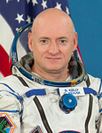

Lyndon B. Johnson Space Center
Houston, Texas 77058
|
National Aeronautics and Space Administration Lyndon B. Johnson Space Center Houston, Texas 77058 |
 |
Biographical Data |
||
Scott J. Kelly (CAPTAIN, USN, RET.)
NASA Astronaut
PERSONAL DATA: Born February 21, 1964 in Orange, New Jersey. He has two children.
EDUCATION: Graduated from Mountain High School, West Orange, New Jersey, in 1982; received a Bachelor of Science degree in Electrical Engineering from the State University of New York Maritime College in 1987 and a Master of Science degree in Aviation Systems from the University of Tennessee, Knoxville, in 1996.
ORGANIZATIONS: Associate Fellow, Society of Experimental Test Pilots; Member, Association of Space Explorers
SPECIAL HONORS: Two Defense Superior Service Medals, Legion of Merit, Distinguished Flying Cross, Navy Commendation Medal, Navy Achievement Medal, two Navy Unit Commendations, National Defense Service Medal, Southwest Asia Service Medal, Kuwait Liberation Medal, Sea Service Deployment Ribbon, NASA Distinguished Service Medal, NASA Exceptional Service Medal, NASA Outstanding Leadership Medal, three NASA Space Flight Medals, Russian Federation Medal for merit in Space Exploration. Korolev Diploma from the Federation Aeronautique Internationale, 1999. Honorary Doctorate of Science degree from the State University of New York, 2008.
EXPERIENCE: Kelly received his commission from the State University of New York Maritime College in May 1987 and was designated a naval aviator in July 1989 at Naval Air Station (NAS) in Beeville, Texas. He then reported to Fighter Squadron 101 at NAS Oceana, Virginia Beach, Virginia, for initial F-14 Tomcat training. Upon completion of this training, he was assigned to Fighter Squadron 143 and made overseas deployments to the North Atlantic, Mediterranean Sea, Red Sea and Persian Gulf aboard the USS Dwight D. Eisenhower (CVN-69). Kelly was selected to attend the U.S. Naval Test Pilot School in January 1993 and completed training in June 1994. After graduation, he worked as a test pilot at the Strike Aircraft Test Squadron, Naval Air Warfare Center, Aircraft Division, Patuxent River, Maryland, flying the F-14 Tomcat and F/A-18 Hornet. Kelly was the first pilot to fly an F-14 with an experimental digital flight control system installed and performed subsequent high angle of attack and departure testing. He has logged over 8,000 hours in more than 40 different aircraft and spacecraft and has over 250 carrier landings. Kelly holds a United States Coast Guard Third Mate’s license. Kelly retired from the U.S. Navy in June of 2012.
NASA EXPERIENCE: Selected by NASA in April 1996, Kelly reported to the Johnson Space Center in August 1996. Following completion of training, he was assigned technical duties in the Astronaut Office Spacecraft Systems/Operations branch. A veteran of three space flights, Kelly has logged more than 180 days in space. He served as pilot on STS-103 in 1999 and was the Mission Commander on STS-118 in 2007. Following STS-103, Kelly served as NASA’s Director of Operations in Star City, Russia. He served as a backup crewmember for ISS Expedition 5 and as the Astronaut Office Space Station Branch Chief. Kelly also served as a Flight Engineer for ISS Expedition 25 and as the Commander of ISS Expedition 26. Following his mission he served at the International Space Station Operations Branch Chief within the Astronaut Office and other technical roles.
Kelly and cosmonaut Mikhail Kornienko have been selected to serve a one-year mission aboard the International Space Station launching in March 2015 and will be onboard during increments 43 to 46. The goal of the mission is to understand how the human body reacts and adapts to the harsh environment of space. Data from the expedition will be used to reduce risks to the health of crewmembers as NASA prepares to advance space travel beyond low Earth orbit. Kelly will be a Flight Engineer for increments 43 and 44 and the International Space Station Commander for increments 45 and 46.
SPACE FLIGHT EXPERIENCE: STS-103 (December 19 to December 27, 1999) was an 8-day mission, during which the crew successfully installed new instruments and upgraded systems on the Hubble Space Telescope (HST). Enhancing HST scientific capabilities required three spacewalks (EVAs). The STS-103 mission was accomplished in 120 Earth orbits, traveling 3.2 million miles in 191 hours and 11 minutes.
STS-118 (August 8 to August 21, 2007) was the 119th space shuttle flight, the 22nd flight to the International Space Station (ISS), and the 20th flight for Endeavour. During the mission, Endeavour’s crew successfully added another truss segment, a new gyroscope and an external spare parts platform to the ISS. A new system that enables docked shuttles to draw electrical power from the station to extend visits to the outpost was successfully activated. A total of four EVAs were performed by three crewmembers. Endeavour carried approximately 5,000 pounds of equipment and supplies to the station and returned to Earth with approximately 4,000 pounds of hardware and equipment. Traveling 5.3 million miles in space, the STS-118 mission was completed in 12 days, 17 hours, 55 minutes and 34 seconds.
On October 7, 2010, Kelly launched aboard the Soyuz TMA-M spacecraft to serve a tour of duty on the ISS. He assumed command of Expedition 26 once the Soyuz TMA-19 undocked on November 24, 2010. After a 159 day stay aboard the ISS, Commander Kelly and Russian Flight Engineers Alexander Kaleri and Oleg Skripochka safely landed their Soyuz spacecraft on the Kazakhstan Steppe on March 16, 2011.
SOCIAL MEDIA: Twitter: https://twitter.com/StationCDRKelly
JANUARY 2014